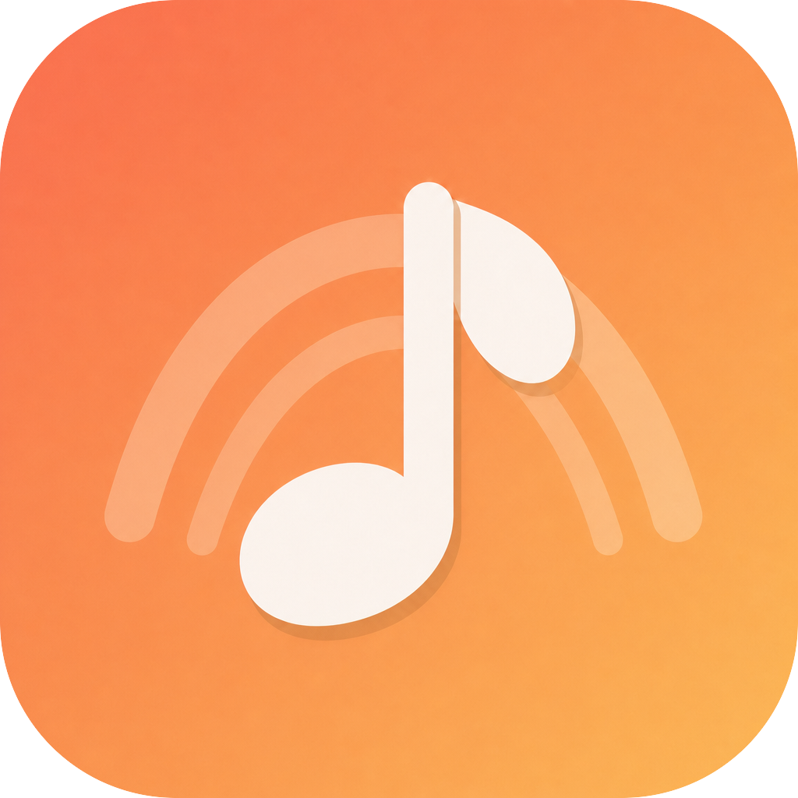
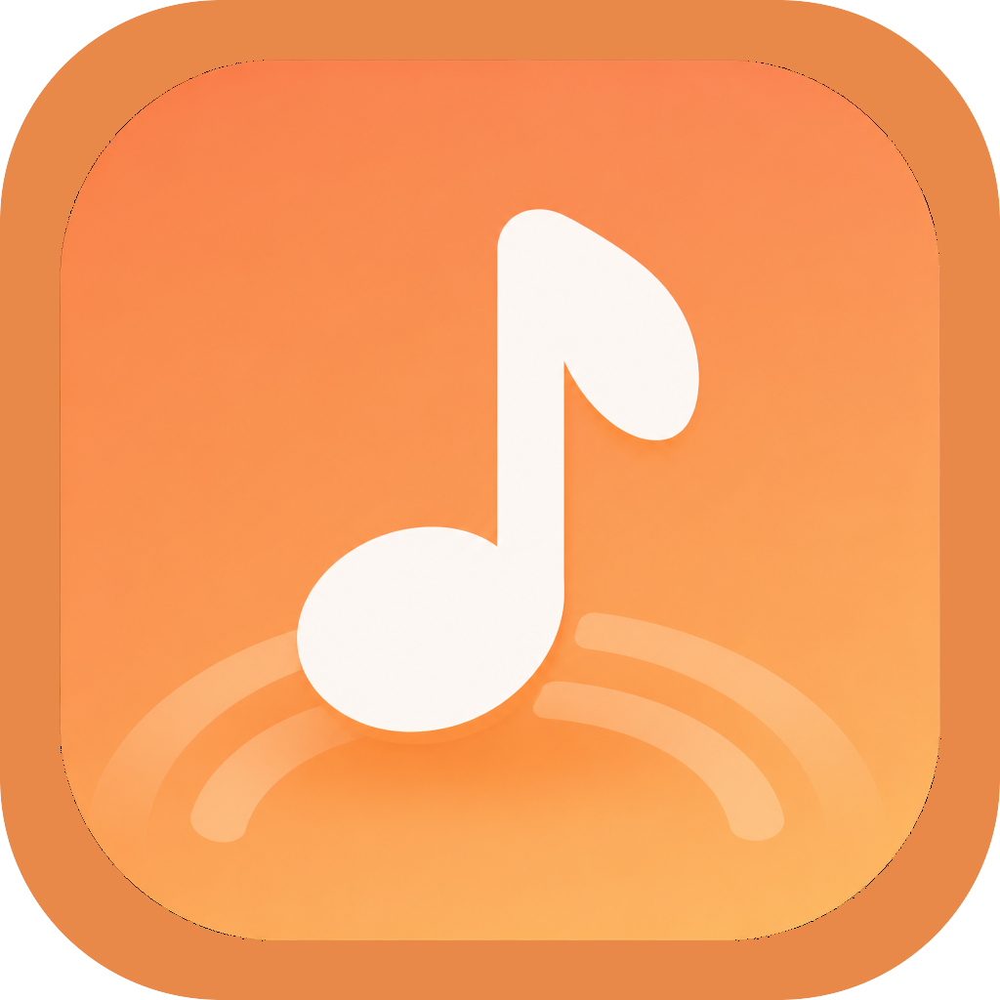

imagen-v01 · Stage Halo Note
正式生图定稿：单音符 + 舞台同心弧，暖橙舞台光，已同步 Electron/PWA。
音符 + 精致扁平 · 舞台暖光 + 音波弧 · 声随境转
正式定稿：imagen-v01（已写入 build/icon.png / public/icon.png）。下方 SVG 为结构探索稿。

正式生图定稿：单音符 + 舞台同心弧，暖橙舞台光，已同步 Electron/PWA。

备选：音符立在音波弧底座上，节奏底座感更强。
单八分音符落在舞台弧光上，直接表达「声随境转」的舞台感。
音符立在音波线上，强调「音波」字面意象与节奏底座。
半环轻托音符，扁平呼应应用内 orbit / 舞台环绕感。
上方柔光椭圆 + 舞台唇线，贴近歌词台聚光氛围。
精简连音配侧向脉冲弧，节奏感更强，略偏「播放器」通用语汇。
旗与弧桥接成更标识化的负形，仍一眼可读为音符。